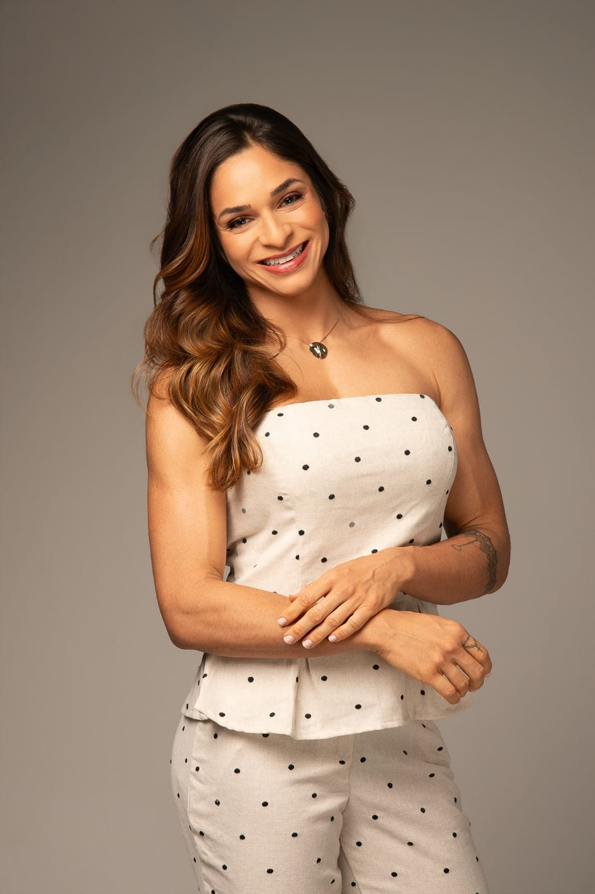
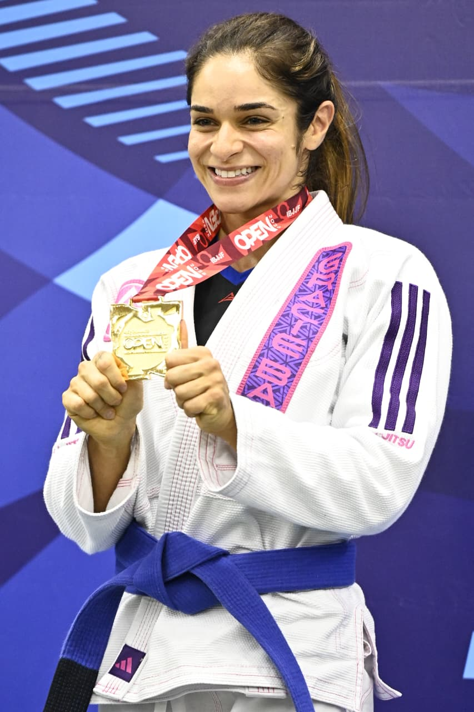
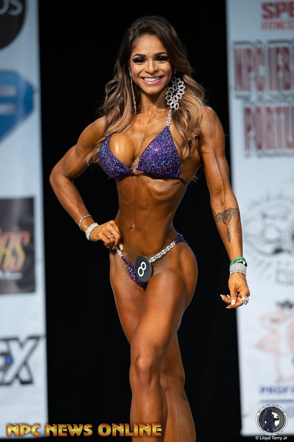
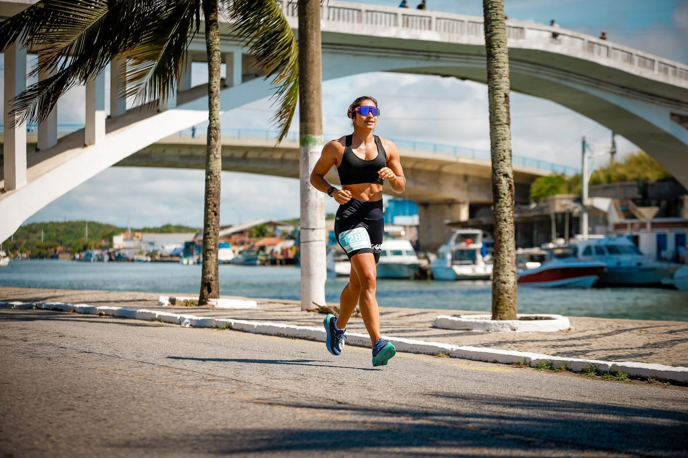
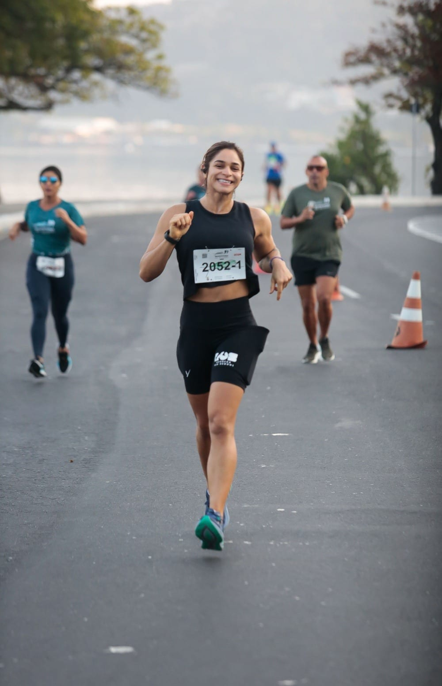
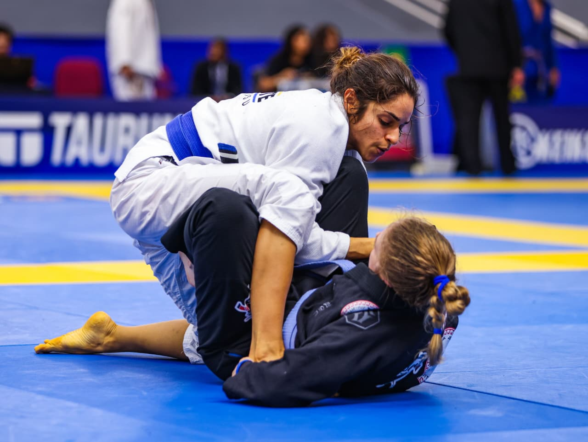
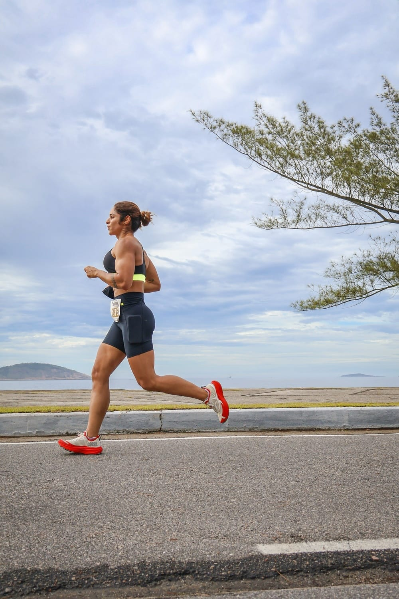
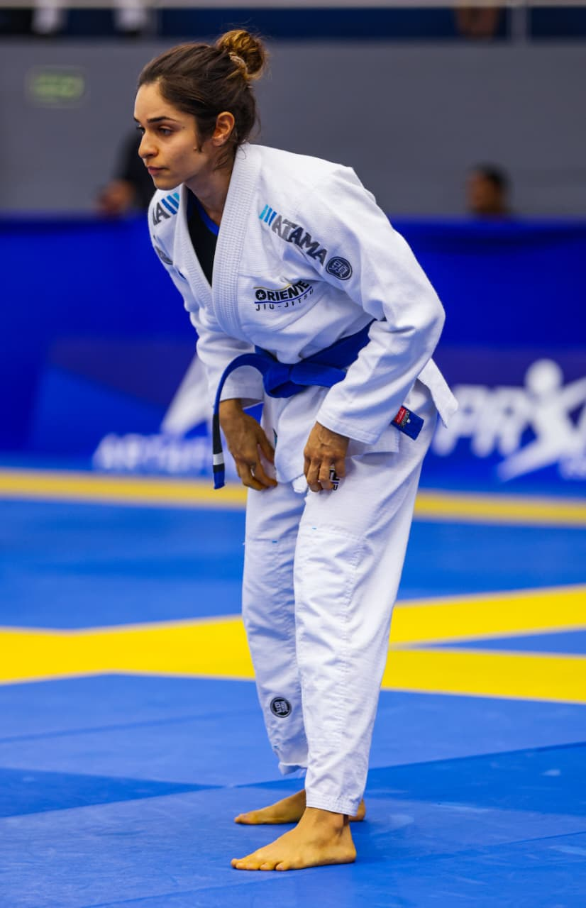
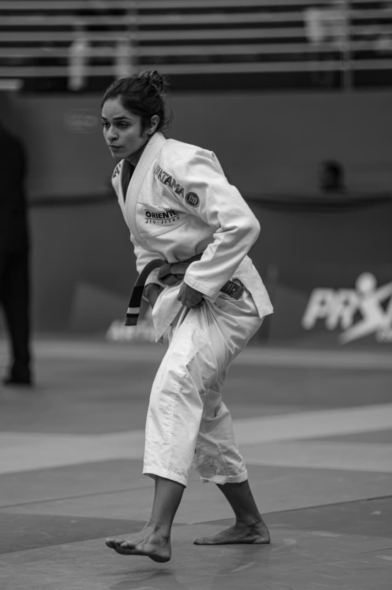

Emagrecimento saudável
Plano sustentável para quem quer emagrecer sem virar refém da balança.
Saiba mais →Acompanhamento próximo, baseado em ciência e construído junto com você — porque sua relação com a comida merece mais do que regras prontas.

Sou nutricionista, atleta amadora e curiosa por natureza — acredito numa nutrição que cabe na sua vida real, sem dietas mágicas nem promessas vazias.
Formada com especialização em nutrição clínica e esportiva, atendo mulheres e homens que querem mais do que um cardápio: querem entender o próprio corpo, melhorar a relação com a comida e construir resultados que duram.
Meu trabalho mistura ciência atualizada, escuta atenta e estratégias práticas — porque o melhor plano alimentar é aquele que você consegue viver.
Cinco frentes de atendimento, uma só abordagem: ciência, escuta e um plano que respeita o seu tempo. Clique em qualquer área para entender o que faz sentido pra você.
Plano sustentável para quem quer emagrecer sem virar refém da balança.
Saiba mais →Estratégia alimentar e suplementação para ganho de massa magra com método.
Saiba mais →Nutrição periodizada para corredores, lutadores e atletas amadores em geral.
Saiba mais →Ciclo, hormônios e pele — nutrição como ferramenta para o seu equilíbrio.
Saiba mais →Para quem quer reaprender a comer com prazer, sem culpa e sem regras rígidas.
Saiba mais →Não é sobre dieta. É sobre construir, junto, um jeito de comer que funcione na sua semana, no seu corpo, na sua cabeça.
Quero conversar →Você não sai do consultório com um PDF e some. Tem ajustes, mensagens entre consultas e check-ins quando precisa.
Cardápio pensado para a sua rotina, seu orçamento e seus prazeres — porque dieta perfeita só funciona no Instagram.
Como atleta amadora, eu vivo o que prescrevo. Sei o que muda treino, sono, ciclo e cabeça quando a alimentação destrava.
Atualização constante para te entregar o que tem evidência — e te poupar de jejuns milagrosos e detox de loja de shopping.
Corrida, jiu-jitsu, treino — vivo na pele os bastidores de quem leva o corpo a sério. Isso muda como eu cuido de quem chega no consultório.





Eu não prescrevo nada que eu mesma não viveria. Cada plano sai do consultório testado por uma nutricionista que também treina, compete e come fora no domingo.
Histórias reais de quem encontrou um jeito mais leve — e mais consistente — de cuidar da própria saúde.
Em 6 meses meu IMC caiu, minha energia voltou e — o mais importante — eu parei de surtar com o cardápio. A Ju mudou minha relação com a comida.
Procurei pra ganhar massa pro jiu-jitsu e ganhei muito mais: aprendi a comer pra performar e a respeitar o cansaço. Resultado bateu na balança e no tatame.
Sou mãe, treino antes do trabalho e detesto sentir fome. A Ju desenhou um plano que cabe nessa loucura toda — sem dieta restritiva, sem culpa.
Um pouco do meu dia — consultório, treinos, ensaios e o que mais cabe entre uma consulta e outra.



Agenda aberta para consultas online e presenciais. Me chama no WhatsApp e a gente conversa sobre o seu momento.
Agendar pelo WhatsApp →